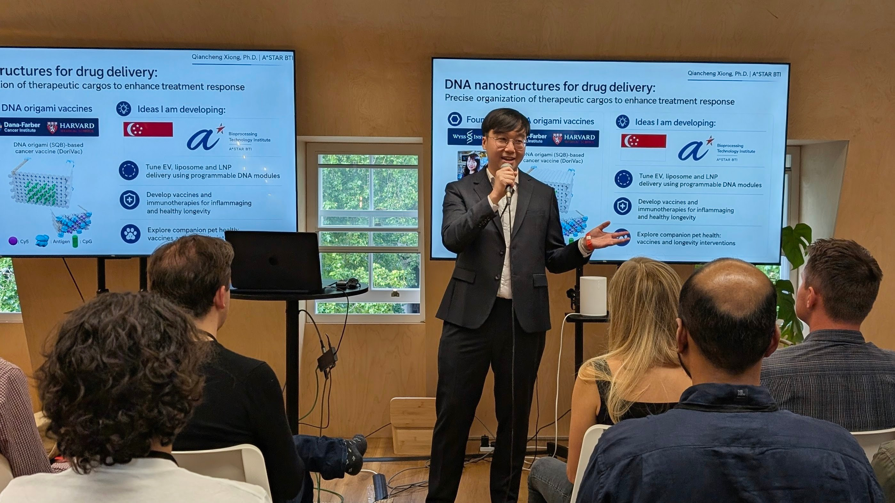
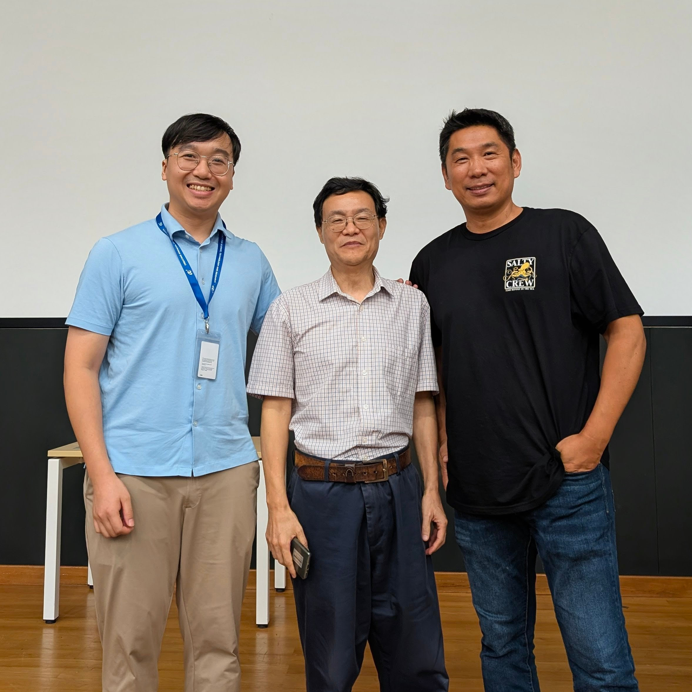
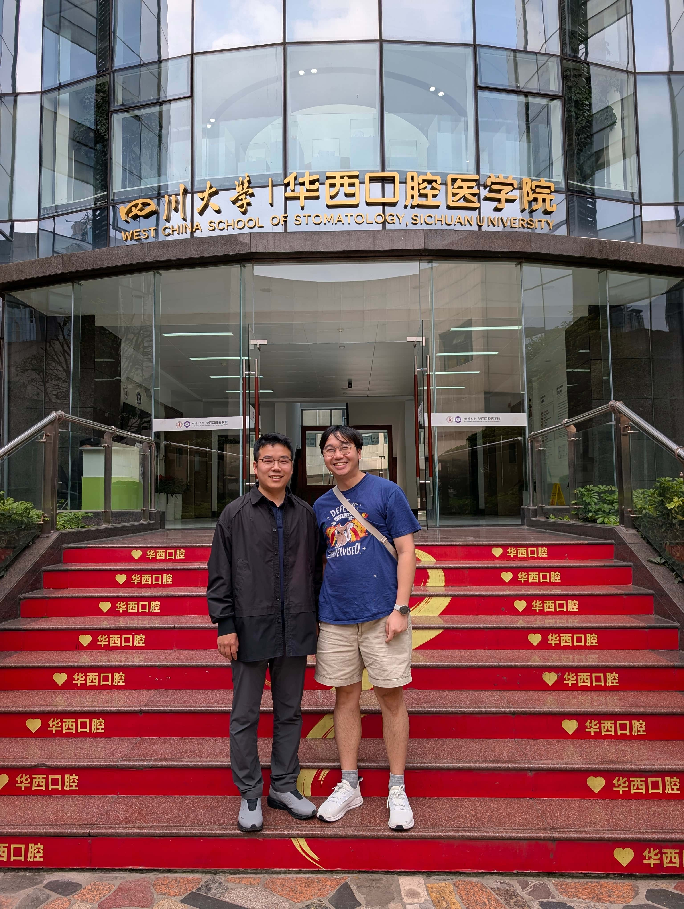
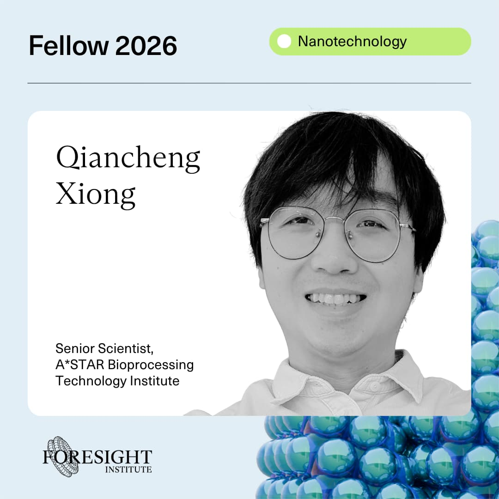
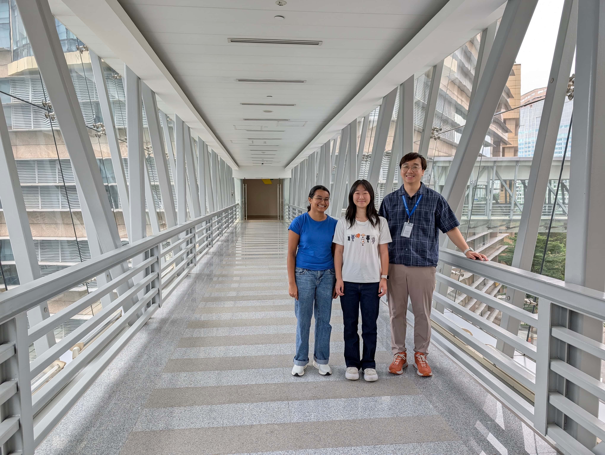
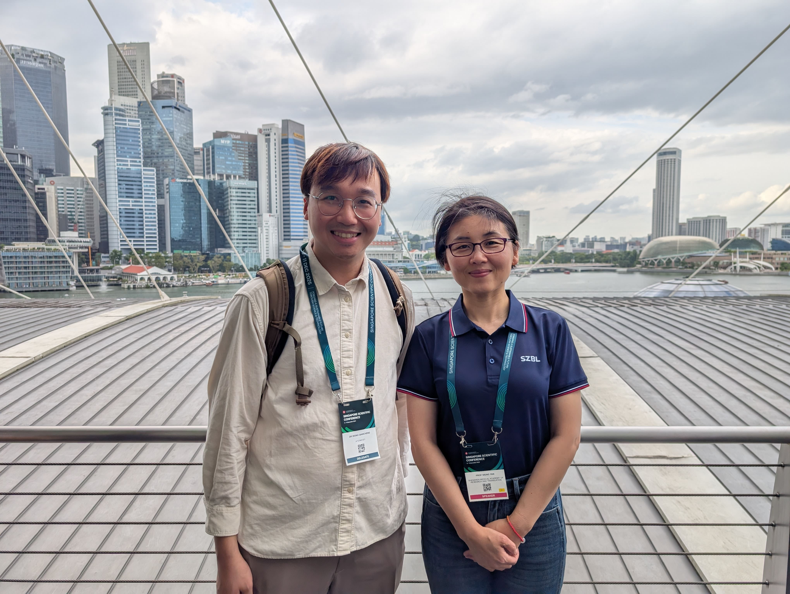
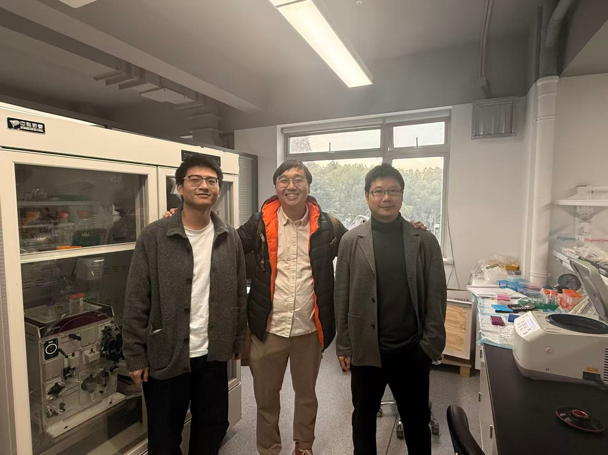

Qiancheng gave a talk at Foresight Vision Weekend UK in London, sharing recent work on DNA nanostructures for drug delivery. The meeting was also a valuable opportunity to learn from and exchange ideas with researchers working across longevity and AI.

JUN2026
Reconnecting with Prof. Hao Yan at NUS
Qiancheng was grateful for the opportunity to reconnect with Prof. Hao Yan from Arizona State University during Prof. Yan's visit to NUS. Many thanks to Prof. Zhisong Wang and the NUS Department of Physics for making the visit possible and for the chance to discuss recent research directions in DNA nanotechnology and biomolecular engineering.

APR2026
Visit to Prof. Taoran Tian at West China School of Stomatology
Qiancheng visited Prof. Taoran Tian at the West China School of Stomatology, Sichuan University, for scientific exchange on nucleic-acid nanotechnology, biomaterials, and potential future collaborations.

MAR2026
DoriVac Infectious-Disease Vaccine Paper Published in Nature Biomedical Engineering
Qiancheng’s co-first-authored paper, "DNA origami vaccine nanoparticles improve humoral and cellular immune responses to infectious diseases", was published online in Nature Biomedical Engineering. This work demonstrates how DNA origami nanoparticles can precisely co-display viral antigens and CpG adjuvant at defined nanoscale spacing, inducing both antibody and T-cell responses against infectious-disease models including SARS-CoV-2, HIV, and Ebola. The study highlights the potential of programmable DNA nanostructures as modular vaccine platforms with tunable immune control.
FEB2026
RNA Nanostructures Paper Published in Nanoscale Horizons
A collaborative paper with Prof. Bryan Wei from Tsinghua University, "RNA nanostructures based on three-letter coding with non-canonical base pairs", was published online in Nanoscale Horizons. The study expands the design space for RNA nanotechnology by incorporating non-canonical base-pairing into a three-letter coding strategy for RNA nanostructure assembly.
JAN2026
Selected as a 2026 Foresight Nanotechnology Fellow
Qiancheng was selected as a 2026 Foresight Nanotechnology Fellow. The Foresight Fellowship supports early-career scientists, engineers, and innovators working to advance frontier technologies.

DEC2025
Congratulations to Madison and Isha for Completing Their RAP Attachments
Congratulations to Madison Cheah-Swift and Isha Suresh for completing their attachments under the A*STAR Student Research Attachment Programme (RAP). It was a pleasure having them contribute to our early lab activities and research discussions.

DEC2025
Singapore Scientific Conference 2025
Qiancheng attended the Singapore Scientific Conference 2025, held at Marina Bay Sands Expo and Convention Centre. He was honoured to meet Prof. Nieng Yan, whose keynote lecture highlighted fundamental advances in structural biology and membrane protein research.

DEC2025
Visit to Prof. Qi Shen at Shanghai Jiao Tong University
Qiancheng visited Prof. Qi Shen at Shanghai Jiao Tong University for scientific exchange on DNA nanotechnology, synthetic biomolecular systems, and future collaborative opportunities.

DEC2025
Welcome Jonan Ling
Jonan Ling joined us as a Research Officer. Jonan was previously a Research Officer at Sunbird Bio. Welcome, Jonan!
NOV2025
Welcome Madison Cheah-Swift and Isha Suresh
Madison Cheah-Swift and Isha Suresh joined us as attachment students under the A*STAR Student Research Attachment Programme (RAP). Welcome, Madison and Isha!
OCT2025
Started as Senior Scientist at A*STAR BTI
Qiancheng started a new position as Senior Scientist at the A*STAR Bioprocessing Technology Institute, supported by the A*STAR Young Achiever Award startup research grant. He will develop programmable nucleic-acid nanostructures for precision therapeutic delivery, with initial directions in vaccine engineering and nucleic-acid therapeutics.
Biography
I am a Senior Scientist at A*STAR Bioprocessing Technology Institute in Singapore. My research focuses on programmable DNA and RNA origami nanostructures for therapeutic delivery, including next-generation vaccines, nucleic-acid therapeutics, and precision biomolecular engineering. I hold a PhD in Cell Biology from Yale University and a BA in Natural Sciences from the University of Cambridge.
Work Experience
Present2025
Senior Scientist
Agency for Science, Technology and Research (A*STAR), Bioprocessing Technology Institute
20252023
Research Fellow
Harvard University, The Wyss Institute for Biologically Inspired Engineering
Harvard Medical School, Dana-Farber Cancer Institute
20172016
Research Officer
Agency for Science, Technology and Research, Institute of Molecular and Cell Biology
Singapore Ministry of Defence, Defence Psychology Department
Education
Ph.D.2023
Ph.D. in Cell Biology, 2023
Master of Philosophy in Cell Biology, 2020
Yale University
B.A.2016
Bachelor of Arts in Natural Sciences
University of Cambridge
Diploma2010
Honours in Mathematics, Biology and Chemistry, and Major in Physics
National University of Singapore
High School of Mathematics and Science
Languages
Chinese
GCE O-Level Higher Chinese
Japanese
GCE O-Level Japanese
French
CEFR A2 Level
Honours, Awards and Grants
2026
Foresight Fellowship
Selected as a Foresight Fellow for work in programmable nucleic-acid nanostructures and therapeutic delivery.
2025
A*STAR Young Achiever Research Grant
Awarded to support independent research on programmable nucleic-acid nanostructures for therapeutic delivery.
2023
Foresight Institute Feynman Prizes - Distinguished Student Award
Recipient of Foresight Institute's Distinguished Student Award for notable contributions to nanotechnology development and understanding.
2023
Northpond Director’s Fund
Recipient of a grant supporting early-stage research at the Wyss Institute.
2023
A*STAR International Fellowship
Awarded for post-doctoral training at top overseas institution to deepen research expertise and expand global network.
2017
A*STAR Graduate Scholarship
The scholarship fully funds up to four years of PhD studies.
2011
National Science Scholarship (BS)
An undergraduate scholarship supporting future PhD-level researchers.
Publications
Filter by type:
Sort by year:
DNA origami vaccine nanoparticles improve humoral and cellular immune responses to infectious diseases
Yang C. Zeng, Olivia J. Young, Qiancheng Xiong, Longlong Si, Min Wen Ku, Sylvie G. Bernier, Hawa Dembele, Giorgia Isinelli, Tal Gilboa, Zoe Swank, Su Hyun Seok, Anjali Rajwar, Amanda Jiang, Yunhao Zhai, LaTonya D. Williams, Caleb A. Hellman, Chris M. Wintersinger, Amanda R. Graveline, Andyna Vernet, Melinda Sanchez, Sarai Bardales, Goyal G., Ingber D. E., Shih W. M.
Original ResearchNature Biomedical Engineering, 2026
Abstract
Current SARS-CoV-2 (severe acute respiratory syndrome coronavirus 2) vaccines have shown robust induction of neutralizing antibodies and CD4+ T cell activation; however, CD8+ responses are variable, and the duration of immunity and protection against variants are limited. Here we repurpose our DNA origami vaccine nanotechnology DoriVac to target infectious viruses, namely, SARS-CoV-2, HIV and Ebola. The DNA origami nanoparticle, conjugated with infectious-disease-specific heptad repeat 2 peptides, which act as highly conserved antigens, and CpG adjuvant at precise nanoscale spacing, induces neutralizing antibodies, Th1 CD4+ T cells and CD8+ T cells in naive mice, with significant improvement over a bolus control. Pre-clinical studies using lymph-node-on-a-chip systems validate that DoriVac, when conjugated with antigenic peptides or proteins, induces promising cellular and humoral immune responses in human cells. Moreover, DoriVac bearing full-length SARS-CoV-2 spike protein achieves immune responses comparable to current mRNA vaccine platforms while potentially reducing storage constraints. These results suggest that DoriVac holds potential as a versatile, modular vaccine platform, capable of inducing both humoral and cellular immunities, underscoring its potential future use.
RNA nanostructures based on three-letter coding with non-canonical base pairs
Jianqiu Zhao, Yan Qin, Qiancheng Xiong, Fang Fang, Bryan Wei
Original ResearchNanoscale Horizons, 2026, Vol. 11, No. 4, pp. 1048–1052
Abstract
Synthetic RNA nanostructures are typically composed of four nucleotides (A, U, G, and C) following a canonical base pairing rule (A-U/G-C). G·U wobble pairs are commonly employed in many RNA nanostructures, but other non-canonical base pairing remains underexplored. In this work, we design RNA nanostructures with only three nucleotides instead of four. Besides Watson–Crick G-C base pairs, we incorporate A·C non-canonical base pairs into this three-letter coding scheme and allow selective nanostructure assembly from mixed DNA templates. With the new paradigm, we produce a variety of RNA nanostructures, further expanding the possibilities of rational molecular design.
PRL1 and PRL3 promote macropinocytosis via its lipid phosphatase activity
Zu Ye, Chee Ping Ng, Haidong Liu, Qimei Bao, Shengfeng Xu, Dan Zu, Yanhua He, Yixing Huang, Abdul Qader Omer Al-Aidaroos, Ke Guo, Jie Li, Lai Ping Yaw, Qiancheng Xiong, Min Thura, Weihui Zheng, Fenghui Guan, Xiangdong Cheng, Yin Shi, Qi Zeng
Original ResearchTheranostics, 2024, Vol. 14, No. 9, pp. 3423–3438
Abstract
PRL1 and PRL3, members of the protein tyrosine phosphatase family, have been associated with cancer metastasis and poor prognosis. Despite extensive research on their protein phosphatase activity, their potential role as lipid phosphatases remains elusive. We conducted comprehensive investigations to elucidate the lipid phosphatase activity of PRL1 and PRL3 using a combination of cellular assays, biochemical analyses, and protein interactome profiling. Functional studies were performed to delineate the impact of PRL1/3 on macropinocytosis and its implications in cancer biology. Our study has identified PRL1 and PRL3 as lipid phosphatases that interact with phosphoinositide (PIP) lipids, converting PI(3,4)P2 and PI(3,5)P2 into PI(3)P on the cellular membranes. These enzymatic activities of PRLs promote the formation of membrane ruffles, membrane blebbing and subsequent macropinocytosis, facilitating nutrient extraction, cell migration, and invasion, thereby contributing to tumor development. These enzymatic activities of PRLs promote the formation of membrane ruffles, membrane blebbing and subsequent macropinocytosis. Additionally, we found a correlation between PRL1/3 expression and glioma development, suggesting their involvement in glioma progression. Combining with the knowledge that PRLs have been identified to be involved in mTOR, EGFR and autophagy, here we concluded the physiological role of PRL1/3 in orchestrating the nutrient sensing, absorbing and recycling via regulating macropinocytosis through its lipid phosphatase activity. This mechanism could be exploited by tumor cells facing a nutrient-depleted microenvironment, highlighting the potential therapeutic significance of targeting PRL1/3-mediated macropinocytosis in cancer treatment.
Recent Advances in DNA Origami-Engineered Nanomaterials and Applications
Pengfei Zhan, Andreas Peil, Qiao Jiang, Dongfang Wang, Shikufa Mousavi, Qiancheng Xiong, Qi Shen, Yingxu Shang, Baoquan Ding, Chenxiang Lin, Yonggang Ke, Na Liu
ReviewChemical Reviews, 2023, Vol. 123, No. 7, pp. 3976–4050
Abstract
DNA nanotechnology is a unique field, where physics, chemistry, biology, mathematics, engineering, and materials science can elegantly converge. Since the original proposal of Nadrian Seeman, significant advances have been achieved in the past four decades. During this glory time, the DNA origami technique developed by Paul Rothemund further pushed the field forward with a vigorous momentum, fostering a plethora of concepts, models, methodologies, and applications that were not thought of before. This review focuses on the recent progress in DNA origami-engineered nanomaterials in the past five years, outlining the exciting achievements as well as the unexplored research avenues. We believe that the spirit and assets that Seeman left for scientists will continue to bring interdisciplinary innovations and useful applications to this field in the next decade.
The capsid lattice engages a bipartite NUP153 motif to mediate nuclear entry of HIV-1 cores
Qi Shen, Sushila Kumari, Chaoyi Xu, Sooin Jang, Jiong Shi, Ryan C. Burdick, Lev Levintov, Qiancheng Xiong, Chunxiang Wu, Swapnil C. Devarkar, Taoran Tian, Therese N. Tripler, Yingxia Hu, Shuai Yuan, Joshua Temple, Qingzhou Feng, C. Patrick Lusk, Christopher Aiken, Alan N. Engelman, Juan R. Perilla, Vinay K. Pathak, Chenxiang Lin, Yong Xiong
Original ResearchProceedings of the National Academy of Sciences, 2023, Vol. 120, No. 13, Article e2202815120
Abstract
Increasing evidence has suggested that the HIV-1 capsid enters the nucleus in a largely assembled, intact form. However, not much is known about how the cone-shaped capsid interacts with the nucleoporins (NUPs) in the nuclear pore for crossing the nuclear pore complex. Here, we elucidate how NUP153 binds HIV-1 capsid by engaging the assembled capsid protein (CA) lattice. A bipartite motif containing both canonical and noncanonical interaction modules was identified at the C-terminal tail region of NUP153. The canonical cargo-targeting phenylalanine-glycine (FG) motif engaged the CA hexamer. By contrast, a previously unidentified triple-arginine (RRR) motif in NUP153 targeted HIV-1 capsid at the CA tri-hexamer interface in the capsid. HIV-1 infection studies indicated that both FG- and RRR-motifs were important for the nuclear import of HIV-1 cores. Moreover, the presence of NUP153 stabilized tubular CA assemblies in vitro. Our results provide molecular-level mechanistic evidence that NUP153 contributes to the entry of the intact capsid into the nucleus.
Modeling HIV-1 nuclear entry with nucleoporin-gated DNA-origami channels
Qi Shen, Qingzhou Feng, Chunxiang Wu, Qiancheng Xiong, Taoran Tian, Shuai Yuan, Jiong Shi, Gregory J. Bedwell, Ran Yang, Christopher Aiken, Alan N. Engelman, C. Patrick Lusk, Chenxiang Lin, Yong Xiong
Original ResearchNature Structural & Molecular Biology, 2023, Vol. 30, No. 4, pp. 425–435
Abstract
Delivering the virus genome into the host nucleus through the nuclear pore complex (NPC) is pivotal in human immunodeficiency virus 1 (HIV-1) infection. The mechanism of this process remains mysterious owing to the NPC complexity and the labyrinth of molecular interactions involved. Here we built a suite of NPC mimics—DNA-origami-corralled nucleoporins with programmable arrangements—to model HIV-1 nuclear entry. Using this system, we determined that multiple cytoplasm-facing Nup358 molecules provide avid binding for capsid docking to the NPC. The nucleoplasm-facing Nup153 preferentially attaches to high-curvature regions of the capsid, positioning it for tip-leading NPC insertion. Differential capsid binding strengths of Nup358 and Nup153 constitute an affinity gradient that drives capsid penetration. Nup62 in the NPC central channel forms a barrier that viruses must overcome during nuclear import. Our study thus provides a wealth of mechanistic insight and a transformative toolset for elucidating how viruses like HIV-1 enter the nucleus.
Functionalized DNA-Origami-Protein Nanopores Generate Large Transmembrane Channels with Programmable Size-Selectivity
Qi Shen, Qiancheng Xiong, Kaifeng Zhou, Qingzhou Feng, Longfei Liu, Taoran Tian, Chunxiang Wu, Yong Xiong, Thomas J. Melia, C. Patrick Lusk, Chenxiang Lin
Original ResearchJournal of the American Chemical Society, 2023, Vol. 145, No. 2, pp. 1292–1300
Abstract
The DNA-origami technique has enabled the engineering of transmembrane nanopores with programmable size and functionality, showing promise in building biosensors and synthetic cells. However, it remains challenging to build large (>10 nm), functionalizable nanopores that spontaneously perforate lipid membranes. Here, we take advantage of pneumolysin (PLY), a bacterial toxin that potently forms wide ring-like channels on cell membranes, to construct hybrid DNA–protein nanopores. This PLY-DNA-origami complex, in which a DNA-origami ring corrals up to 48 copies of PLY, targets the cholesterol-rich membranes of liposomes and red blood cells, readily forming uniformly sized pores with an average inner diameter of ∼22 nm. Such hybrid nanopores facilitate the exchange of macromolecules between perforated liposomes and their environment, with the exchange rate negatively correlating with the macromolecule size (diameters of gyration: 8–22 nm). Additionally, the DNA ring can be decorated with intrinsically disordered nucleoporins to further restrict the diffusion of traversing molecules, highlighting the programmability of the hybrid nanopores. PLY-DNA pores provide an enabling biophysical tool for studying the cross-membrane translocation of ultralarge molecules and open new opportunities for analytical chemistry, synthetic biology, and nanomedicine.
Actuating tension-loaded DNA clamps drives membrane tubulation
Longfei Liu, Qiancheng Xiong, Chun Xie, Frederic Pincet, Chenxiang Lin
Original ResearchScience Advances, 2022, Vol. 8, No. 41, Article eadd1830
Abstract
Membrane dynamics in living organisms can arise from proteins adhering to, assembling on, and exerting force on cell membranes. Programmable synthetic materials, such as self-assembled DNA nanostructures, offer the capability to drive membrane-remodeling events that resemble protein-mediated dynamics but with user-defined outcomes. An illustrative example is the tubular deformation of liposomes by DNA nanostructures with purposely designed shapes, surface modifications, and self-assembling properties. However, stimulus-responsive membrane tubulation mediated by DNA reconfiguration remains challenging. Here, we present the triggered formation of membrane tubes in response to specific DNA signals that actuate membrane-bound DNA clamps from an open state to various predefined closed states, releasing prestored energy to activate membrane deformation. We show that the timing and efficiency of vesicle tubulation, as well as the membrane tube widths, are modulated by the conformational change of DNA clamps, marking a solid step toward spatiotemporal control of membrane dynamics in an artificial system.
Omicron-specific mRNA vaccination alone and as a heterologous booster against SARS-CoV-2
Zhenhao Fang, Lei Peng, Renata Filler, Kazushi Suzuki, Andrew McNamara, Qianqian Lin, Paul A. Renauer, Luojia Yang, Bridget Menasche, Angie Sanchez, Ping Ren, Qiancheng Xiong, Madison Strine, Paul Clark, Chenxiang Lin, Albert I. Ko, Nathan D. Grubaugh, Craig B. Wilen, Sidi Chen
Original ResearchNature Communications, 2022, Vol. 13, No. 1, Article 3250
Abstract
The Omicron variant of SARS-CoV-2 recently swept the globe and showed high level of immune evasion. Here, we generate an Omicron-specific lipid nanoparticle (LNP) mRNA vaccine candidate, and test its activity in animals, both alone and as a heterologous booster to WT mRNA vaccine. Our Omicron-specific LNP-mRNA vaccine elicits strong antibody response in vaccination-naïve mice. Mice that received two-dose WT LNP-mRNA show a > 40-fold reduction in neutralization potency against Omicron than WT two weeks post boost, which further reduce to background level after 3 months. The WT or Omicron LNP-mRNA booster increases the waning antibody response of WT LNP-mRNA vaccinated mice against Omicron by 40 fold at two weeks post injection. Interestingly, the heterologous Omicron booster elicits neutralizing titers 10-20 fold higher than the homologous WT booster against Omicron variant, with comparable titers against Delta variant. All three types of vaccination, including Omicron alone, WT booster and Omicron booster, elicit broad binding antibody responses against SARS-CoV-2 WA-1, Beta, Delta variants and SARS-CoV. These data provide direct assessments of an Omicron-specific mRNA vaccination in vivo, both alone and as a heterologous booster to WT mRNA vaccine.
Variant-specific vaccination induces systems immune responses and potent in vivo protection against SARS-CoV-2
Lei Peng, Paul A Renauer, Arya Ökten, Zhenhao Fang, Jonathan J Park, Xiaoyu Zhou, Qianqian Lin, Matthew B Dong, Renata Filler, Qiancheng Xiong, Paul Clark, Chenxiang Lin, Craig B Wilen, Sidi Chen
Lipid nanoparticle (LNP)-mRNA vaccines offer protection against COVID-19; however, multiple variant lineages caused widespread breakthrough infections. Here, we generate LNP-mRNAs specifically encoding wild-type (WT), B.1.351, and B.1.617 SARS-CoV-2 spikes, and systematically study their immune responses. All three LNP-mRNAs induced potent antibody and T cell responses in animal models; however, differences in neutralization activity have been observed between variants. All three vaccines offer potent protection against in vivo challenges of authentic viruses of WA-1, Beta, and Delta variants. Single-cell transcriptomics of WT- and variant-specific LNP-mRNA-vaccinated animals reveal a systematic landscape of immune cell populations and global gene expression. Variant-specific vaccination induces a systemic increase of reactive CD8 T cells and altered gene expression programs in B and T lymphocytes. BCR-seq and TCR-seq unveil repertoire diversity and clonal expansions in vaccinated animals. These data provide assessment of efficacy and direct systems immune profiling of variant-specific LNP-mRNA vaccination in vivo.
DNA-Origami NanoTrap for Studying the Selective Barriers Formed by Phenylalanine-Glycine-Rich Nucleoporins
Qi Shen, Taoran Tian, Qiancheng Xiong, Patrick D Ellis Fisher, Yong Xiong, Thomas J Melia, C Patrick Lusk, Chenxiang Lin
Original ResearchJournal of the American Chemical Society, 2021, Vol. 143, No. 31, pp. 12294–12303
Abstract
DNA nanotechnology provides a versatile and powerful tool to dissect the structure–function relationship of biomolecular machines like the nuclear pore complex (NPC), an enormous protein assembly that controls molecular traffic between the nucleus and cytoplasm. To understand how the intrinsically disordered, Phe-Gly-rich nucleoporins (FG-nups) within the NPC establish a selective barrier to macromolecules, we built a DNA-origami NanoTrap. The NanoTrap comprises precisely arranged FG-nups in an NPC-like channel, which sits on a baseplate that captures macromolecules that pass through the FG network. Using this biomimetic construct, we determined that the FG-motif type, grafting density, and spatial arrangement are critical determinants of an effective diffusion barrier. Further, we observed that diffusion barriers formed with cohesive FG interactions dominate in mixed-FG-nup scenarios. Finally, we demonstrated that the nuclear transport receptor, Ntf2, can selectively transport model cargo through NanoTraps composed of FxFG but not GLFG Nups. Our NanoTrap thus recapitulates the NPC’s fundamental biological activities, providing a valuable tool for studying nuclear transport.
PRL3 induces polyploid giant cancer cells eliminated by PRL3-zumab to reduce tumor relapse
Min Thura, Zu Ye, Abdul Qader Al-Aidaroos, Qiancheng Xiong, Jun Yi Ong, Abhishek Gupta, Jie Li, Ke Guo, Koon Hwee Ang, Qi Zeng
Original ResearchCommunications Biology, 2021, Vol. 4, No. 1, Article 923
Abstract
PRL3, a unique oncotarget, is specifically overexpressed in 80.6% of cancers. In 2003, we reported that PRL3 promotes cell migration, invasion, and metastasis. Herein, firstly, we show that PRL3 induces Polyploid Giant Cancer Cells (PGCCs) formation. PGCCs constitute stem cell-like pools to facilitate cell survival, chemo-resistance, and tumor relapse. The correlations between PRL3 overexpression and PGCCs attributes raised possibilities that PRL3 could be involved in PGCCs formation. Secondly, we show that PRL3+ PGCCs co-express the embryonic stem cell markers SOX2 and OCT4 and arise mainly due to incomplete cytokinesis despite extensive DNA damage. Thirdly, we reveal that PRL3+ PGCCs tolerate prolonged chemotherapy-induced genotoxic stress via suppression of the pro-apoptotic ATM DNA damage-signaling pathway. Fourthly, we demonstrated PRL3-zumab, a First-in-Class humanized antibody drug against PRL3 oncotarget, could reduce tumor relapse in ‘tumor removal’ animal model. Finally, we confirmed that PGCCs were enriched in relapse tumors versus primary tumors. PRL3-zumab has been approved for Phase 2 clinical trials in Singapore, US, and China to block all solid tumors. This study further showed PRL3-zumab could potentially serve an ‘Adjuvant Immunotherapy’ after tumor removal surgery to eliminate PRL3+ PGCC stem-like cells, preventing metastasis and relapse.
Sorting sub-150-nm liposomes of distinct sizes by DNA-brick-assisted centrifugation
Yang Yang, Zhenyong Wu, Laurie Wang, Kaifeng Zhou, Kai Xia, Qiancheng Xiong, Longfei Liu, Zhao Zhang, Edwin R. Chapman, Yong Xiong, Thomas J. Melia, Erdem Karatekin, Hongzhou Gu, and Chenxiang Lin
Original ResearchNature Chemistry, 2021, Vol. 13, No. 4, pp. 335–342
Abstract
In cells, myriad membrane-interacting proteins generate and maintain curved membrane domains with radii of curvature around or below 50 nm. To understand how such highly curved membranes modulate specific protein functions, and vice versa, it is imperative to use small liposomes with precisely defined attributes as model membranes. Here, we report a versatile and scalable sorting technique that uses cholesterol-modified DNA ‘nanobricks’ to differentiate hetero-sized liposomes by their buoyant densities. This method separates milligrams of liposomes, regardless of their origins and chemical compositions, into six to eight homogeneous populations with mean diameters of 30–130 nm. We show that these uniform, leak-resistant liposomes serve as ideal substrates to study, with an unprecedented resolution, how membrane curvature influences peripheral (ATG3) and integral (SNARE) membrane protein activities. Compared with conventional methods, our sorting technique represents a streamlined process to achieve superior liposome size uniformity, which benefits research in membrane biology and the development of liposomal drug-delivery systems.
DNA Origami Post‐Processing by CRISPR‐Cas12a
Qiancheng Xiong, Chun Xie, Zhao Zhang, Longfei Liu, John T Powell, Qi Shen, Chenxiang Lin
Original ResearchAngewandte Chemie International Edition, 2020, Vol. 59, No. 10, pp. 3956–3960
Abstract
Customizable nanostructures built through the DNA‐origami technique hold tremendous promise in nanomaterial fabrication and biotechnology. Despite the cutting‐edge tools for DNA‐origami design and preparation, it remains challenging to separate structural components of an architecture built from—thus held together by—a continuous scaffold strand, which in turn limits the modularity and function of the DNA‐origami devices. To address this challenge, here we present an enzymatic method to clean up and reconfigure DNA‐origami structures. We target single‐stranded (ss) regions of DNA‐origami structures and remove them with CRISPR‐Cas12a, a hyper‐active ssDNA endonuclease without sequence specificity. We demonstrate the utility of this facile, selective post‐processing method on DNA structures with various geometrical and mechanical properties, realizing intricate structures and structural transformations that were previously difficult to engineer. Given the biocompatibility of Cas12a‐like enzymes, this versatile tool may be programmed in the future to operate functional nanodevices in cells.
A Programmable DNA-Origami Platform for Studying Lipid Transfer between Bilayers
Xin Bian, Zhao Zhang, Qiancheng Xiong, Pietro De Camilli, Chenxiang Lin
Original ResearchNature Chemical Biology, 2019, Vol. 15, No. 8, pp. 830–837
Abstract
Non-vesicular lipid transport between bilayers at membrane contact sites plays important physiological roles. Mechanistic insight into the action of lipid-transport proteins localized at these sites requires determination of the distance between bilayers at which this transport can occur. Here we developed DNA-origami nanostructures to organize size-defined liposomes at precise distances and used them to study lipid transfer by the synaptotagmin-like mitochondrial lipid-binding protein (SMP) domain of extended synaptotagmin 1 (E-Syt1). Pairs of DNA-ring-templated donor and acceptor liposomes were docked through DNA pillars, which determined their distance. The SMP domain was anchored to donor liposomes via an unstructured linker, and lipid transfer was assessed via a Förster resonance energy transfer (FRET)-based assay. We show that lipid transfer can occur over distances that exceed the length of an SMP dimer, which is compatible with the shuttle model of lipid transport. The DNA nanostructures developed here can also be adapted to study other processes occurring where two membranes are closely apposed to each other.
Talks & Appearances
ASGCT 2025 Late Breaking Abstracts
Oral Presentation on DNA Origami Infectious Disease Vaccines.
If you use the bending angle calculator for structural modeling, please cite the software source and the geometric/mechanical models it implements.
Reader-Friendly Formats
Primary Software Source: Xiong, Q. et al. "DNA Origami Post-Processing by CRISPR-Cas12a." Angewandte Chemie International Edition, 2020, 59(10), 3956–3960.
Foundational Geometry: Dietz, H. et al. "Folding DNA into Twisted and Curved Nanoscale Shapes." Science, 2009, 325(5941), 725–730.
Foundational Mechanics: Zhou, L. et al. "DNA Origami Compliant Nanostructures with Tunable Mechanical Properties." ACS Nano, 2014, 8(1), 27–34.
BibTeX Entry:
%% Primary Software Source %%
@article{xiong2020dna,
author = {Xiong, Qiancheng and Xie, Chun and Zhang, Zhao and Liu, Longfei and Powell, John T. and Shen, Qi and Lin, Chenxiang},
title = {DNA Origami Post-Processing by CRISPR-Cas12a},
journal = {Angewandte Chemie International Edition},
volume = {59},
number = {10},
pages = {3956--3960},
year = {2020},
doi = {10.1002/anie.201915555}
}
%% Foundational Geometry %%
@article{dietz2009folding,
author = {Dietz, Hendrik and Douglas, Shawn M. and Shih, William M.},
title = {Folding DNA into Twisted and Curved Nanoscale Shapes},
journal = {Science},
volume = {325},
number = {5941},
pages = {725--730},
year = {2009},
doi = {10.1126/science.1174251}
}
%% Foundational Mechanics %%
@article{zhou2014dna,
author = {Zhou, Lifeng and Marras, Alexander E. and Su, Hai-Jun and Castro, Carlos E.},
title = {DNA Origami Compliant Nanostructures with Tunable Mechanical Properties},
journal = {ACS Nano},
volume = {8},
number = {1},
pages = {27--34},
year = {2014},
doi = {10.1021/nn405408g}
}
If you use the ssDNA tension calculator for structural modeling, please cite the implementation source and the ssDNA spring mechanics frameworks it builds on.
Reader-Friendly Formats
Primary Implementation: Xiong, Q. et al. "DNA Origami Post-Processing by CRISPR-Cas12a." Angewandte Chemie International Edition, 2020.
Foundational Tensegrity: Liedl, T. et al. "Self-assembly of three-dimensional prestressed tensegrity structures from DNA." Nature Nanotechnology, 2010, 5(7), 476–483.
Nanoscopic Force Clamps: Nickels, P. C. et al. "Molecular force spectroscopy with a DNA origami-based nanoscopic force clamp." Science, 2016, 354(6310), 305–307.
BibTeX Entry:
%% Primary Implementation %%
@article{xiong2020dna,
author = {Xiong, Qiancheng and Xie, Chun and Zhang, Zhao and Liu, Longfei and Powell, John T. and Shen, Qi and Lin, Chenxiang},
title = {DNA Origami Post-Processing by CRISPR-Cas12a},
journal = {Angewandte Chemie International Edition},
volume = {59},
number = {10},
pages = {3956--3960},
year = {2020},
doi = {10.1002/anie.201915555}
}
%% Foundational Tensegrity %%
@article{liedl2010self,
author = {Liedl, Tim and Högberg, Björn and Tytell, Jessica and Ingber, Donald E. and Shih, William M.},
title = {Self-assembly of three-dimensional prestressed tensegrity structures from DNA},
journal = {Nature Nanotechnology},
volume = {5},
number = {7},
pages = {476--483},
year = {2010},
doi = {10.1038/nnano.2010.107}
}
%% Nanoscopic Force Clamp %%
@article{nickels2016molecular,
author = {Nickels, Philipp C. and Wünsch, Beatriz and Holzmeister, Philipp and Bae, Wooli and Kneer, Laura M. and Grohmann, David and Tinnefeld, Philip and Liedl, Tim},
title = {Molecular force spectroscopy with a DNA origami-based nanoscopic force clamp},
journal = {Science},
volume = {354},
number = {6310},
pages = {305--307},
year = {2016},
doi = {10.1126/science.aah5974}
}
Published Designs
Browse, filter, and download interactive .json routing files and structural design profiles from our past published research. Use the embedded database workspace controls below to filter designs by specific publication records, architectural cross-sectional lattice layout (honeycomb vs. square), or target structural nanoparticle applications.
The database below may take a moment to load on slower computers.
Contact & Meet Me
I would be happy to discuss my research, potential collaborations, or related scientific ideas.